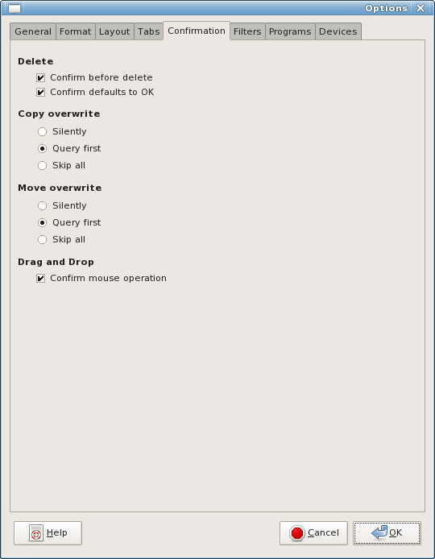
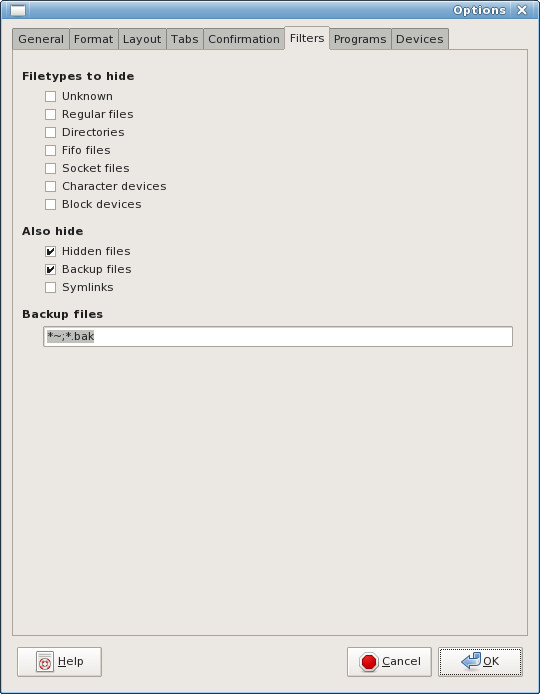

GNOME Commander
A powerful filemanager for the Gnome desktop environment


Options slideshow
This is an interactive slideshow of the GNOME Commander options (shots from v1.2.4), click on the option tabs like you would do in the program itself.


